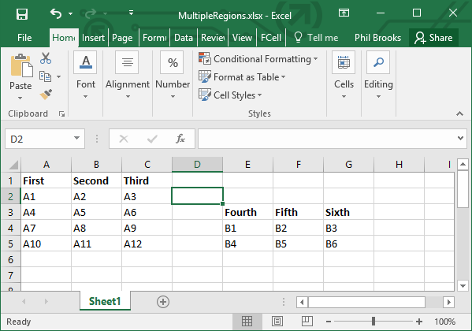

Accessing Ranges
To access a range you need to specify the range (or ranges) to be used.
You can either specify this as the second parameter or the named Range parameter.
Example

This example demonstrates referencing multiple ranges:
// reference the type provider dll
#r "ExcelProvider.dll"
open FSharp.Interop.Excel
// Let the type provider do it's work
type MultipleRegions = ExcelFile<"MultipleRegions.xlsx", Range="A1:C5,E3:G5", ForceString=true>
let file = new MultipleRegions()
let rows = file.Data |> Seq.toArray
let test1 = rows.[0].First
let test2 = rows.[0].Fourth
And the variables test1 and test2 have the following values:
|
|
Multiple items
namespace FSharp
--------------------
namespace Microsoft.FSharp
namespace FSharp
--------------------
namespace Microsoft.FSharp
namespace FSharp.Interop
namespace FSharp.Interop.Excel
type MultipleRegions = ExcelFile<...>
type ExcelFile =
inherit ExcelFileInternal
<summary>Typed representation of data in an Excel file.</summary> <param name='FileName'>Location of the Excel file.</param> <param name='SheetName'>Name of sheet containing data. Defaults to first sheet.</param> <param name='Range'>Specification using `A1:D3` type addresses of one or more ranges. Defaults to use whole sheet.</param> <param name='HasHeaders'>Whether the range contains the names of the columns as its first line.</param> <param name='ForceString'>Specifies forcing data to be processed as strings. Defaults to `false`.</param>
<summary>Typed representation of data in an Excel file.</summary> <param name='FileName'>Location of the Excel file.</param> <param name='SheetName'>Name of sheet containing data. Defaults to first sheet.</param> <param name='Range'>Specification using `A1:D3` type addresses of one or more ranges. Defaults to use whole sheet.</param> <param name='HasHeaders'>Whether the range contains the names of the columns as its first line.</param> <param name='ForceString'>Specifies forcing data to be processed as strings. Defaults to `false`.</param>
val file: MultipleRegions
val rows: ExcelFile<...>.Row array
property ExcelFile<...>.Data: System.Collections.Generic.IEnumerable<ExcelFile<...>.Row> with get
module Seq
from Microsoft.FSharp.Collections
val toArray: source: 'T seq -> 'T array
val test1: string
val test2: string